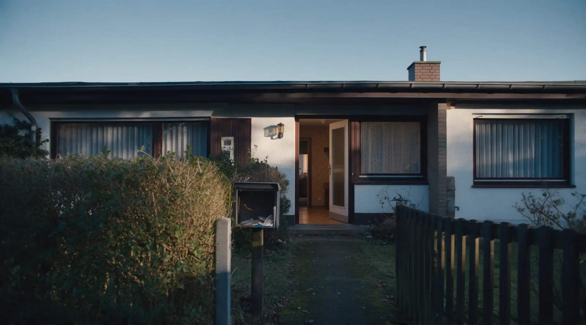
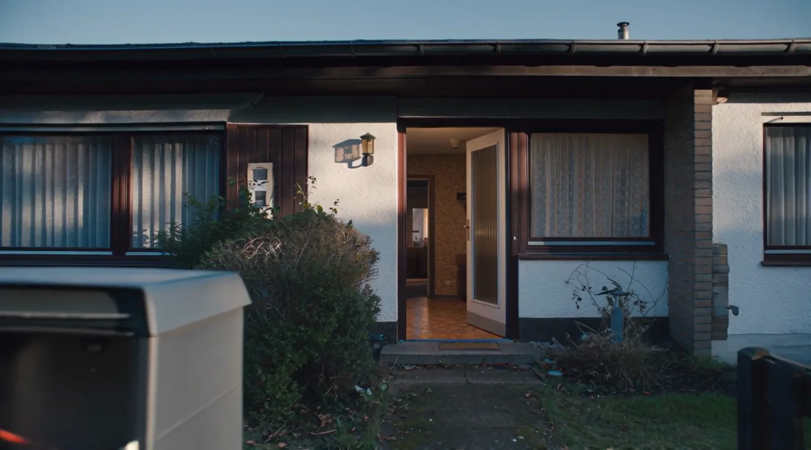
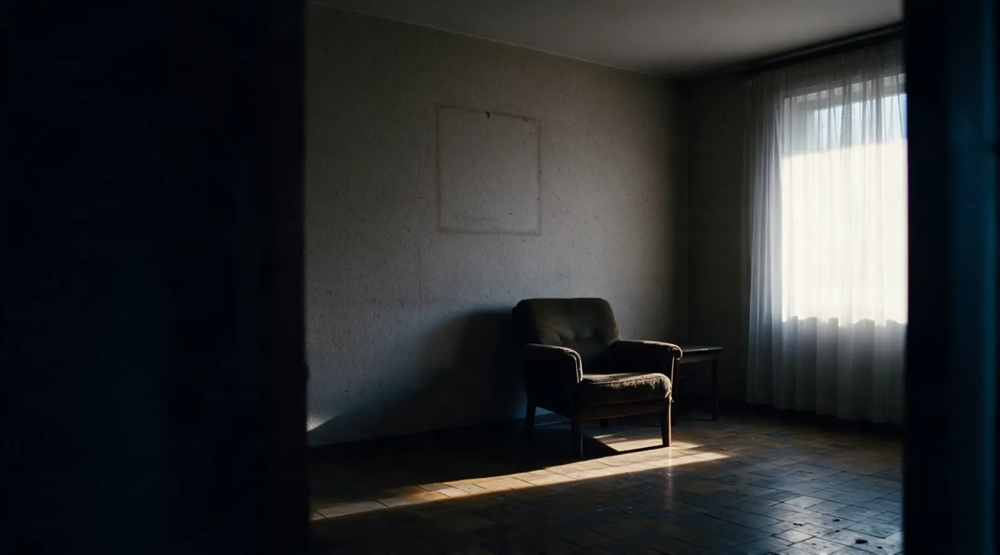
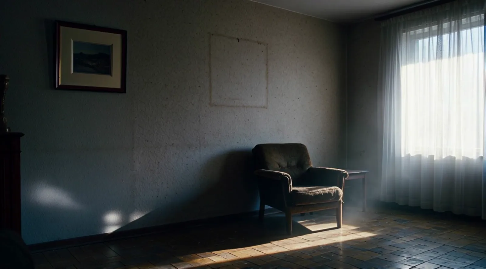
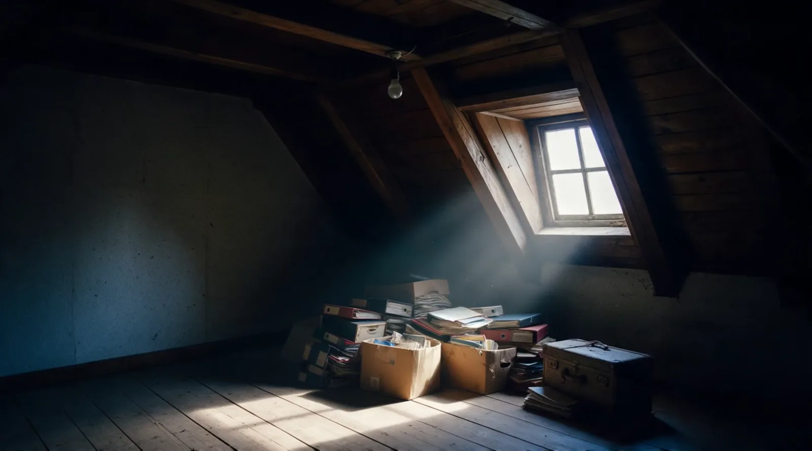
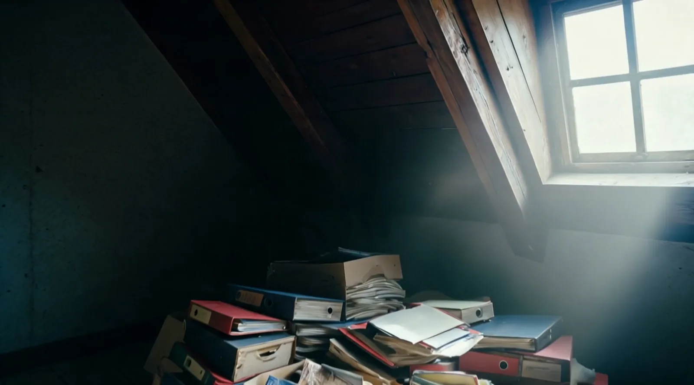

Meist gibt es am Anfang keinen Plan, sondern einen Schlüssel und die Frage, wer sich jetzt darum kümmert.
In einer Erbengemeinschaft gehört das Haus allen zusammen, nicht jedem ein Viertel davon.
Vor jeder Frage nach dem Preis steht ein Zimmer, in dem jemand gelebt hat.
Ein Erbe behält das Haus und zahlt die anderen aus.
Das Haus wird vermietet, die Erträge werden geteilt.
Alle verkaufen zusammen, der Erlös wird geteilt.
Wird er zu spät oder zu hoch angesetzt, zahlt die Familie darauf. Davon getrennt läuft die Spekulationsfrist: Sie beginnt beim Erben nicht neu. Die Zeit, in der die Immobilie dem Erblasser gehörte, wird angerechnet. § 23 EStG
30 Minuten, kostenlos und ohne Auftrag. Danach wissen Sie, woran Sie sind.
Erstgespräch buchen5,0 von 5 aus 50 Bewertungen auf ProvenExpert
„Wir hatten sehr gute Zusammenarbeit, Herr Nagel hat uns regelmässige Updates über den Stand des Verkaufs gegeben.“ Familie M., 15.12.2024
Entwurf für Andreas Nagel, September 2026. Nicht veröffentlicht.